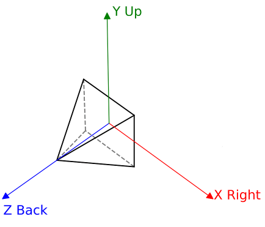

|
Lysa
0.0
Lysa 3D Engine
|
|
Lysa
0.0
Lysa 3D Engine
|
Lysa uses a right-handed, Y-up coordinate system throughout : in world space, view space, and all engine math helpers.

| Constant | Value | Semantic |
|---|---|---|
AXIS_X / AXIS_RIGHT | {+1, 0, 0} | Right |
AXIS_Y / AXIS_UP | {0, +1, 0} | Up |
AXIS_Z / AXIS_BACK | {0, 0, +1} | Behind the camera (back) |
AXIS_DOWN | {0, −1, 0} | Down |
AXIS_FRONT | {0, 0, −1} | In front of the camera |
AXIS_LEFT | {−1, 0, 0} | Left |
The camera looks along −Z by default.
DebugConfiguration::drawCoordinateSystem in lysa::ContextConfiguration.All transforms in Lysa are represented as row-major 4×4 matrices (float4x4 from hlslpp). Points and vectors are multiplied on the right:
The standard transform pipeline is:
In shader code this is expressed as two sequential mul calls:
The TRANSFORM_BASIS constant holds the identity float3x3 and can be used to extract local axes from any model matrix:
hlslpp provides static factory methods on float4x4:
Rotations follow the right-hand rule: a positive angle around an axis corresponds to a counter-clockwise rotation when viewed from the positive end of that axis toward the origin.
The view matrix is the inverse of the camera's world-space transform. In Lysa, lysa::Camera::transform stores the camera-to-world matrix and the GPU uniform receives the inverse:
To position a camera at world position (−8, 1.8, 0) looking along +X (rotated −90° around Y):
A look-at helper is also available when targeting a specific world point:
Lysa provides two projection helpers:
Perspective :
The matrix maps the view frustum to clip space with Z in [−1, +1] (OpenGL-style depth, right-handed). Vireo's backend translates this appropriately for Vulkan ([0, 1]) and DirectX ([0, 1]).
Orthographic :
Euler angles in Lysa follow XYZ order (pitch → yaw → roll), expressed in radians. The lysa::euler_angles function converts a quaternion:
Gimbal lock can occur at ±90° pitch; use quaternions directly when continuity matters (animation, smooth camera rotation):
Texture UV coordinates follow the top-left origin convention:
u = 0 is the left edge, u = 1 is the right edge.v = 0 is the top edge, v = 1 is the bottom edge.In vertex data, UVs are packed alongside the position and normal in float4 attributes to minimise attribute slots:
On the CPU side the lysa::Vertex struct mirrors this:
After the projection, clip coordinates are divided by w to produce Normalized Device Coordinates (NDC):
Screen-space pixel coordinates (e.g. mouse position) follow the top-left origin** convention:
(0, 0) is the top-left corner of the viewport.(width, height) is the bottom-right corner.The conversion from pixel coordinates to NDC is:
lysa::Camera provides screenToWorld to convert a pixel position into a world-space ray, useful for mouse picking and interaction:
AABBs are expressed in the same right-handed, Y-up space. The lysa::AABB struct stores min and max corners:
When a mesh instance is placed in the world, its local-space AABB is converted to a world-space AABB using the model matrix. If the transform contains rotation, the result is the smallest axis-aligned box that encloses the oriented box:
The GPU frustum culling compute pass reads these world-space boxes to discard invisible instances before generating indirect draw commands.
 2.1.0
2.1.0